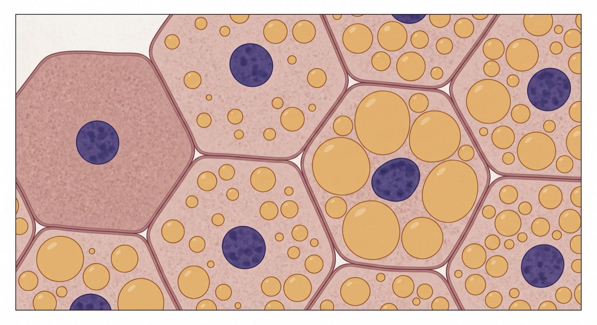

El tejido adiposo tiene un límite de almacenamiento. Cuando llegan más ácidos grasos de los que puede guardar, y además el músculo no los está quemando, esos ácidos grasos terminan dentro de células que no están hechas para almacenarlos: el hepatocito y la propia fibra muscular.
A la grasa depositada fuera del tejido adiposo se le llama grasa ectópica. En el hígado ese depósito daña por sí mismo, y a eso se le llama lipotoxicidad hepática.
